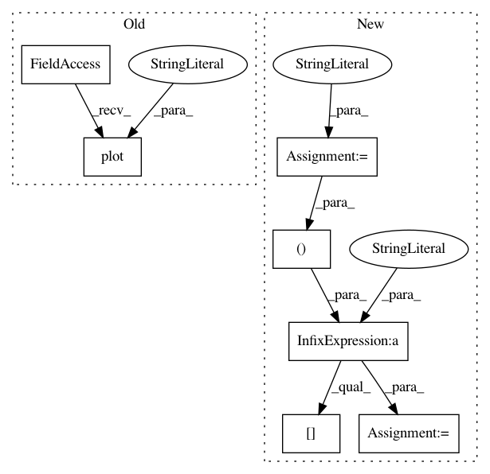

23dad88287331e254e119634bc991d1e8bbb8668,examples/text_labels_and_annotations/stix_fonts_demo.py,,,#,11
Before Change
plt.figure(figsize=(8, (len(tests) * 1) + 2))
plt.plot([0, 0], "r")
plt.axis([0, 3, -len(tests), 0])
plt.yticks(-np.arange(len(tests)))
for i, s in enumerate(tests):
plt.text(0.1, -i, s, fontsize=32)
After Change
import numpy as np
circle123 = "\N{CIRCLED DIGIT ONE}\N{CIRCLED DIGIT TWO}\N{CIRCLED DIGIT THREE}"
tests = [
r"$%s \mathrm{%s} \mathbf{%s}$" % ((circle123,) * 3),
r"$\mathsf{Sans \Omega} \mathrm{\mathsf{Sans \Omega}}"
r" \mathbf{\mathsf{Sans \Omega}}$",
r"$\mathtt{Monospace}$",
r"$\mathcal{CALLIGRAPHIC}$",
r"$\mathbb{Blackboard \pi}$",
r"$\mathrm{\mathbb{Blackboard \pi}}$",
r"$\mathbf{\mathbb{Blackboard \pi}}$",
r"$\mathfrak{Fraktur} \mathbf{\mathfrak{Fraktur}}$",
r"$\mathscr{Script}$",
]
fig = plt.figure(figsize=(8, (len(tests) * 1) + 2))
for i, s in enumerate(tests[::-1]):
fig.text(0, (i + .5) / len(tests), s, fontsize=32)
plt.show()
In pattern: SUPERPATTERN
Frequency: 3
Non-data size: 7
Instances
Project Name: matplotlib/matplotlib
Commit Name: 23dad88287331e254e119634bc991d1e8bbb8668
Time: 2019-03-25
Author: anntzer.lee@gmail.com
File Name: examples/text_labels_and_annotations/stix_fonts_demo.py
Class Name:
Method Name:
Project Name: matplotlib/matplotlib
Commit Name: 21e7d2ca9cfa51ceaf46d65a5ec30abfcdc5bffe
Time: 2019-03-30
Author: tcaswell@gmail.com
File Name: examples/text_labels_and_annotations/stix_fonts_demo.py
Class Name:
Method Name:
Project Name: richzhang/colorization-pytorch
Commit Name: 1215d2390c0ef900337366e7a89e8d21e4bfd592
Time: 2018-08-25
Author: rzhang88@gmail.com
File Name: test_sweep.py
Class Name:
Method Name: